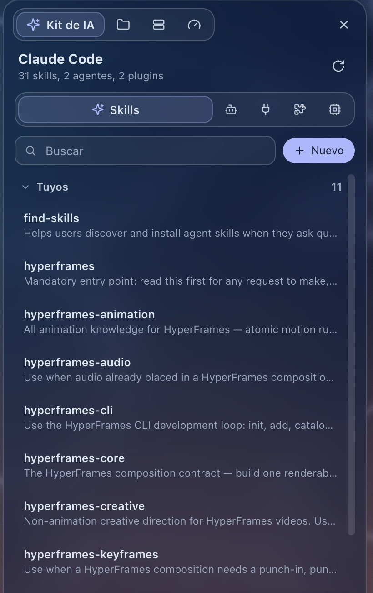
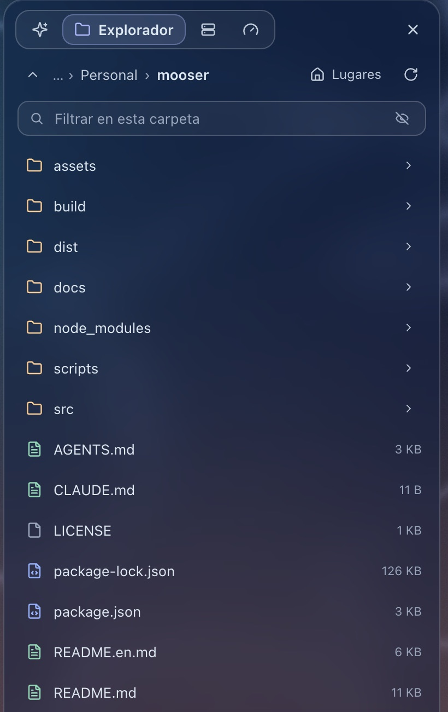
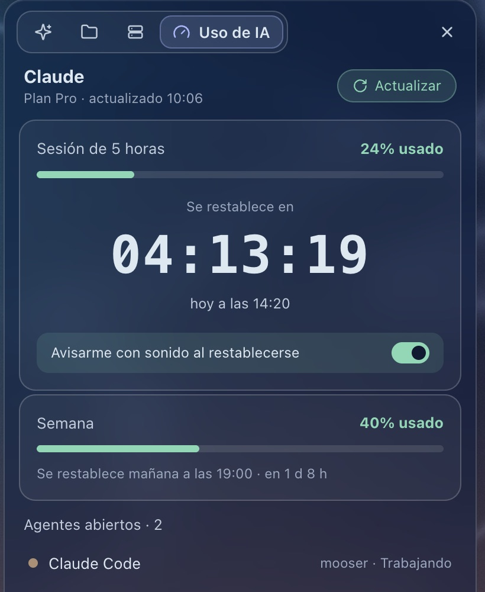
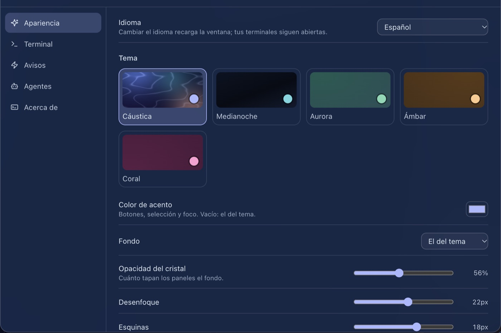

Todos tus agentes, en una ventana tranquila. All your agents, in one calm window.
Mooser es una app de escritorio para trabajar con varios agentes de código a la vez. Cada proyecto es un espacio, y la barra lateral te dice qué agente trabaja, cuál te necesita y cuál terminó. Mooser is a desktop app for working with several coding agents at once. Each project is a space, and the sidebar tells you which agent is working, which one needs you and which one is done.
Gratis y de código abierto, para macOS y Windows.Free and open source, for macOS and Windows.
● Read(src/routes/users.ts) ⎿ Read 182 lines ● Update(src/routes/users.ts) ⎿ 2 additions, 1 removal 41 - const users = await db.users.all() 41 + const users = await db.users.page(cursor, 50) 42 + res.set("Next-Cursor", users.next) ● Users now come back in pages of 50. ? Add the same pagination to /orders? 1. Yes 2. No✻ Thinking… 8s
› add tests for the signup form • Explored └ Read SignupForm.tsx Search validateEmail in src • Added SignupForm.test.tsx └ 6 tests: empty email, bad email, short password, success, … ◦ Running npm test (14s)✓ 6 passed
Tres colores te lo dicen todoThree colors tell you everything
Abre un agente en una pestaña y Mooser lo reconoce: Claude Code, Codex, Gemini CLI, Aider, OpenCode, Cursor Agent, Copilot CLI, Amp, Goose, Qwen Code o Kiro. Desde ese momento, su color en la barra lateral te dice en qué está.Open an agent in a tab and Mooser recognizes it: Claude Code, Codex, Gemini CLI, Aider, OpenCode, Cursor Agent, Copilot CLI, Amp, Goose, Qwen Code or Kiro. From then on, its color in the sidebar tells you what it's doing.
TrabajandoWorking
Está escribiendo, leyendo archivos o pensando. No hace falta que mires.It's writing, reading files or thinking. No need to look.
Te necesitaNeeds you
Te ha hecho una pregunta. Suena un aviso suave y llega una notificación, aunque estés en otra app.It asked you something. A soft chime plays and a notification arrives, even in another app.
TerminóDone
Acabó mientras mirabas otra pestaña. Queda marcado hasta que vuelvas.It finished while you were on another tab. It stays marked until you go back.
Todo lo demás, a un ladoEverything else, on the side
El panel lateral de Mooser tiene cuatro secciones. Pruébalas:Mooser's side panel has four sections. Try them:
Tu Claude Code, ordenadoYour Claude Code, tidy
Los skills, agentes, servidores MCP, plugins y el modelo por defecto de Claude Code, en un panel. Crea y edita tus skills y agentes, enciende o apaga plugins, añade o quita servidores MCP y cambia de modelo sin tocar archivos de configuración.Claude Code's skills, agents, MCP servers, plugins and default model, in one panel. Create and edit your skills and agents, turn plugins on or off, add or remove MCP servers and switch models without touching config files.

Tus archivos, sin salirYour files, without leaving
Navega carpetas, abre archivos con su app, abre una carpeta como espacio, y crea, renombra, mueve, copia o envía a la papelera. El color del icono te dice qué tipo de archivo es.Browse folders, open files with their app, open a folder as a space, and create, rename, move, copy or trash. The icon's color tells you what kind of file it is.

Tus servidores, a un clicYour servers, one click away
Guarda tus servidores SSH en grupos de color y conéctate en una pestaña con la contraseña guardada, cifrada con el Llavero de macOS o DPAPI en Windows. Pasa archivos entre tu equipo y tus servidores, o de un servidor a otro.Keep your SSH servers in colored groups and connect in a tab with the saved password, encrypted with the macOS Keychain or DPAPI on Windows. Move files between your computer and your servers, or server to server.
Que no se acabe el plan a mitad de tareaDon't run out of plan mid-task
Cuánto llevas de la sesión de 5 horas y de la semana de tu plan de Claude, con una cuenta atrás hasta que se restablece y un aviso opcional cuando vuelves a tener margen.How much of your Claude plan's 5-hour session and week you've used, with a countdown to the reset and an optional alert when you have room again.

Un día con MooserA day with Mooser
- Abres tus proyectos.You open your projects. api, web y docs, cada uno en su espacio con sus pestañas. Ayer los dejaste así.api, web and docs, each in its own space with its tabs. That's how you left them yesterday.
- Los agentes se ponen a trabajar.The agents get to work. Claude Code en la API, Codex con los tests de la web, uno al lado del otro.Claude Code on the API, Codex on the web tests, side by side.
- Claude Code te necesita.Claude Code needs you. Estabas leyendo un correo. Suena un aviso, respondes y vuelve al trabajo.You were reading an email. A chime plays, you answer and it gets back to work.
- Codex terminó.Codex is done. Mientras mirabas otra pestaña. Queda en verde hasta que lo revisas.While you were on another tab. It stays green until you check it.
- Tu sesión de Claude se restablece.Your Claude session resets. Mooser te avisa, y lanzas la tarea larga que estabas guardando.Mooser tells you, and you start the long task you were saving.
- Cierras.You quit. Espacios, pestañas y divisiones se guardan. Mañana, todo donde estaba.Spaces, tabs and splits are saved. Tomorrow, everything where it was.
Hazlo tuyoMake it yours
Tema, acento, fondo, cristal, tamaños, fuente y shell de la terminal, avisos y los agentes del botón +. Todo está en la Configuración, y se guarda en archivos normales que también puedes editar a mano.Theme, accent, background, glass, sizes, terminal font and shell, alerts and the agents in the + button. It's all in Settings, saved as plain files you can also edit by hand.
~/.mooser/ ├─ settings.json tema, terminal, avisos, agentestheme, terminal, alerts, agents ├─ custom.css tus propios estilosyour own styles ├─ backgrounds/ imágenes de fondobackground images └─ plugins/ comandos y paneles propiosyour own commands and panels

Sin soltar el tecladoWithout leaving the keyboard
En Windows, Ctrl+Shift en lugar de ⌘ y Alt+1…9 para los espacios.On Windows, Ctrl+Shift instead of ⌘, and Alt+1…9 for spaces.
Lo tuyo se queda en tu equipoWhat's yours stays on your computer
Las contraseñas de tus servidores se guardan solo cifradas, en el almacén seguro del sistema.Your server passwords are stored only encrypted, in the system's secure storage.
Para el uso de Claude, Mooser lee la sesión que Claude Code ya guarda y la envía solo a la API de Anthropic. No la guarda ni la renueva.For Claude usage, Mooser reads the session Claude Code already keeps and sends it only to Anthropic's API. It never stores or refreshes it.
Sin telemetría. Y es código abierto: puedes leer todo lo que hace.No telemetry. And it's open source: you can read everything it does.
PreguntasQuestions
¿Cuesta algo?Does it cost anything?
No. Mooser es gratis y de código abierto, con licencia MIT. Los agentes que uses tienen sus propios planes.No. Mooser is free and open source under the MIT license. The agents you use have their own plans.
¿Funciona sin Claude Code?Does it work without Claude Code?
Sí. Terminales, espacios, agentes, Explorador y Servidores funcionan igual. Solo el Kit de IA y el uso del plan necesitan Claude Code.Yes. Terminals, spaces, agents, Explorer and Servers work the same. Only the AI kit and plan usage need Claude Code.
¿Mis terminales siguen vivas si cierro Mooser?Do my terminals keep running if I quit Mooser?
No: viven mientras la app está abierta. Al volver, cada pestaña empieza de nuevo en su carpeta, con tus espacios y divisiones como estaban.No: they live while the app is open. When you come back, each tab starts again in its folder, with your spaces and splits as they were.
¿Puedo usar otra shell?Can I use another shell?
Sí. Por defecto usa zsh en macOS y PowerShell en Windows; elige otra en Configuración, Terminal, Shell.Yes. It uses zsh on macOS and PowerShell on Windows by default; pick another in Settings, Terminal, Shell.
¿Hay versión para Linux?Is there a Linux version?
Todavía no. Por ahora Mooser es para macOS (Apple Silicon e Intel) y Windows 10 u 11.Not yet. For now Mooser is for macOS (Apple Silicon and Intel) and Windows 10 or 11.
¿Por qué macOS dice que no puede verificar la app?Why does macOS say it can't verify the app?
Porque aún no está notarizada por Apple. La primera vez, pulsa Listo en el aviso y luego Abrir igualmente en Ajustes del Sistema, Privacidad y seguridad.Because Apple hasn't notarized it yet. The first time, click Done in the dialog, then Open Anyway in System Settings, Privacy & Security.
Descarga MooserDownload Mooser
Gratis, para macOS y Windows.Free, for macOS and Windows.
Primera vez en macOSFirst launch on macOS
- Abre el .dmg y arrastra Mooser a Aplicaciones.Open the .dmg and drag Mooser to Applications.
- macOS dirá que no ha podido verificarla, porque aún no está notarizada por Apple. Pulsa Listo, no "Trasladar a la papelera".macOS says it couldn't verify it, because Apple hasn't notarized it yet. Click Done, not "Move to Trash".
- En Ajustes del Sistema → Privacidad y seguridad, pulsa Abrir igualmente. Desde entonces se abre normalmente.In System Settings → Privacy & Security, click Open Anyway. From then on it opens normally.
Primera vez en WindowsFirst launch on Windows
- Abre el instalador y elige idioma y carpeta.Run the installer and pick the language and folder.
- Si SmartScreen avisa, pulsa Más información y luego Ejecutar de todas formas.If SmartScreen warns, click More info, then Run anyway.
Desde el códigoFrom source
git clone https://github.com/davechbga/mooser.git cd mooser && npm install && npm start
Necesitas Node.js 20 o más reciente y Git.You need Node.js 20 or newer and Git.